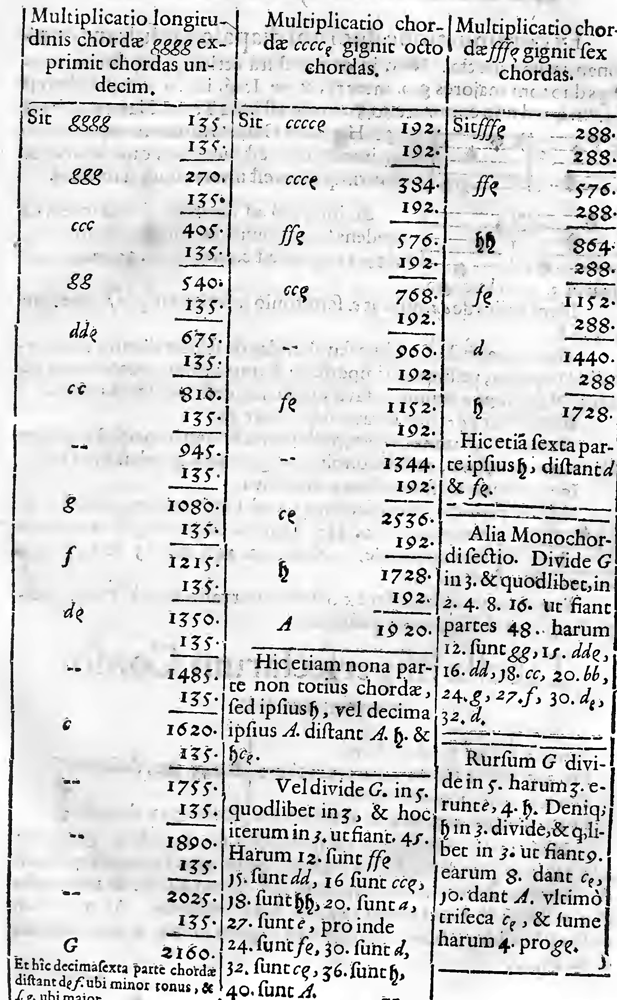

Caput XI — De Compositione Systematum Majorum & Corollaria Arithmetica¶
f. 0147 · p. 57CAPUT XI.
De Systematum compositione.
Etsi unius hominis vox plerumque intra unius octavae systema vertitur, plurium tamen Melodiarum concentus docet octavas plures contiguas ordinare. Veteres igitur numerorum affectionibus omnia definientes, Diapason epidiapente Numeris 1. 2. 3., systema perfectum definierunt: nobis suprà sectiones harmonicae singulae singula rediderunt systemata, quorum erat maximum Disdiapason-epidiapente, numeris 1. 5. 6. Etsi nostris Componistis, ut vocant, limes
f. 0148 · p. 58nullus est positus, dum Melodias concinentes multiplicant: quod etiam Creator Deus, in contemperatione motuum coelestium praeivit, Systemate facto ex septem diapason, & eo amplius. Veruntamen quia hic componimus systema, ut omnes omninò consonantias speculemur, perfectas, imperfectas; ad hoc opus sufficiunt nobis duo diapason in unum composita intervallum, quod etiam Ptolemaeus perfectum systema appellavit, in hunc, qui sequitur modum.
Nostra scala Musica, quae nihil est aliud quàm Systema Musices nostrae Maximum, complectitur duo diapason & unam sextam; quam huc apponam, comparatam cum systemate veterum, & appellationibus chordarum graecis.
Chordae cum clavibus & intervallis intra Disdiapason:
gg 540 — Semitonium — ffe 576 — Limma — ff 607 ½ — Semitonium — ee 648 — Diesis — dde 675 — Semitonium — dd 720 — Semitonium — cce 768 — Limma — cc 810 — Semitonium — ♮♮ 864 — Diesis — bb 900 — Semitonium — a 960 — Semitonium — ge 1024 — Limma — g 1080 — Semitonium — fe 1152 — Limma — f 1215 — Semitonium — e 1296 — Diesis — de 1350 — Semitonium — d 1440 — Semitonium — ce 1536 — Limma — c 1620 — Semitonium — ♮ 1728 — Diesis — b 1800 — Semitonium — A 1920 — Semitonium — Ge 2048 — Limma — G 2160.
Appellationes chordarum Graecae ex perfecto Systemate Ptolemaei:
ee la
dd la sol
cc sol fa
bb fa ♮ mi
aa la mi re
g sol re ut — Nete Hyperbolaeon
f fa ut — Paranete Hyperbolaeon
e la mi — Trite Hyperbolaeon
d la sol re — Nete Diezeugmenon
c sol fa ut — Paranete Diezeugmenon
b fa ♮ mi — Trite Diezeugmenon
a la mi re — Paramese
G sol re ut — Mese
F fa ut — Lichanos Meson
E la mi — Parhypate Meson
D sol re — Hypate Meson
C fa ut — Lichanos Hypaton
B mi — Parhypate Hypaton
A re — Hypate Hypaton
Γ ut — Proslambanomenos
Hic singulae lineae significant singulas chordas principales. Hic non lineae tantum sed etiam intervalla interlineas singula significant singulas chordas seu sonos principales, more hodiernorum Diagrammatum.
De caeteris partibus Musices hodiernae agere non est instituti mei; nihil enim pertinet ad naturam Intervallorum, quae sit Notarum mensura, varietas, proportio Modorum, Pausae & similia.
f. 0149 · p. 59Corollaria Arithmetica & Mechanica.


Multiplicatio longitudinis chordae gggg exprimit chordas undecim.
Sit gggg 135; ggg 270; ccc 405; gg 540; dde 675; cc 810; — 945; g 1080; f 1215; de 1350; — 1485; c 1620; — 1755; — 1890; — 2025; G 2160. Et hîc decimasexta parte chordae distant de, f, ubi minor tonus, & f, g, ubi major.
Multiplicatio chordae ccccc gignit octo chordas.
Sit ccccc 192; ccce 384; ffe 576; cce 768; — 960; fe 1152; — 1344; ce 1536 [impr. 2536]; ♮ 1728; A 1920. Hîc etiam nona parte non totius chordae, sed ipsius ♮, vel decima ipsius A, distant A, ♮ & ♮, ce.
Vel divide G in 5, quodlibet in 3, & hoc iterum in 3, ut fiant 45. Harum 12 sunt ffe, 15 sunt dd, 16 sunt cce, 18 sunt bb, 20 sunt a, 27 sunt e, proinde 24 sunt fe, 30 sunt d, 32 sunt ce, 36 sunt ♮, 40 sunt A.
Multiplicatio chordae ffffe [impr. daefffe] gignit sex chordas.
Sit ffffe 288; ffe 576; ♮♮ 864; fe 1152; d 1440; ♮ 1728. Hîc etiam sexta parte ipsius ♮, distant d & fe.
Alia Monochordi sectio. Divide G in 3, & quodlibet in 2. 4. 8. 16. ut fiant partes 48: harum 12 sunt gg, 15 dde, 16 dd, 18 cc, 20 bb, 24 g, 27 f, 30 de, 32 d.
Rursum G divide in 5; harum 3 erunt e, 4 ♮. Denique ♮ in 3 divide, & quodlibet in 3, ut fiant 9: earum 8 dant ce, 10 dant A. Ultimò triseca ce, & sume harum 4 pro ge.